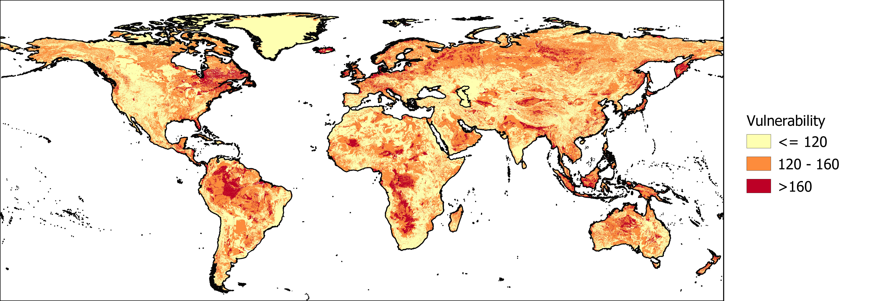

<!DOCTYPE HTML PUBLIC "-//W3C//DTD HTML 4.0 Transitional//EN">
<html>
<head>
	<meta http-equiv="content-type" content="text/html; charset=utf-8"/>
	<title></title>
	<meta name="generator" content="LibreOffice 6.0.3.2 (Linux)"/>
	<meta name="created" content="2018-11-28T14:36:05.290513465"/>
	<meta name="changed" content="2018-11-28T14:36:26.638289848"/>
	<style type="text/css">
		@page { margin: 0.79in }
		p { margin-bottom: 0.1in; line-height: 115% }
		a:link { so-language: zxx }
	</style>
</head>
<body lang="en-US" dir="ltr">
<p style="margin-bottom: 0in; line-height: 100%"><span lang="en-US">Aquifer
vulnerability indicates how likely contaminants and pollutants at the
surface are to reach the groundwater. This depends on physical
characteristics, such as the depth to the groundwater and the geology
of the area. Usually, contaminants are transported to the groundwater
by water moving through the soil. In general, the longer it takes for
water to reach the groundwater, the lower the risk of groundwater
contamination. This is because there is more opportunity for
contaminants to be broken down, dispersed, or stick to the soil
material along the way. Here, we applied a well-known method to
calculate groundwater vulnerability called DRASTIC. </span>
</p>
<p style="margin-bottom: 0in; line-height: 100%"><br/>

</p>
<p style="margin-bottom: 0in; line-height: 100%; page-break-after: avoid">

</p>
<p style="margin-bottom: 0in; line-height: 100%"><font color="#448cca"><font face="Century Gothic, serif"><font size="1" style="font-size: 8pt"><span lang="en-US">Global
map of groundwater vulnerability based on the DRASTIC method, divided
into low (yellow), medium and high (red) risk categories.</span></font></font></font></p>
<p style="margin-bottom: 0in; line-height: 100%"><br/>

</p>
<p style="margin-bottom: 0in; line-height: 100%"><span lang="en-US">Note
that whether contamination of vulnerable aquifers actually has an
impact on groundwater use depends on the natural groundwater quality.
Where groundwater is already of poor quality and is therefore not
suitable for use, additional contamination may not have consequences
for human activities.</span></p>
<p style="margin-bottom: 0in; line-height: 100%"><br/>

</p>
<p style="margin-bottom: 0in; line-height: 100%"><span lang="en-US"><b>More
about DRASTIC</b></span></p>
<p style="margin-bottom: 0in; line-height: 100%"><span lang="en-US">The
DRASTIC method estimates aquifer vulnerability based on 7 datasets:</span></p>
<ul>
	<li/>
<p style="margin-bottom: 0in; line-height: 100%"><span lang="en-US">Depth
	to groundwater </span>
	</p>
	<li/>
<p style="margin-bottom: 0in; line-height: 100%"><span lang="en-US">Recharge
	</span>
	</p>
	<li/>
<p style="margin-bottom: 0in; line-height: 100%"><span lang="en-US">Aquifer
	material  </span>
	</p>
	<li/>
<p style="margin-bottom: 0in; line-height: 100%"><span lang="en-US">Soil
	material </span>
	</p>
	<li/>
<p style="margin-bottom: 0in; line-height: 100%"><span lang="en-US">Topography</span></p>
	<li/>
<p style="margin-bottom: 0in; line-height: 100%"><span lang="en-US">Influence
	of the vadose zone</span></p>
	<li/>
<p style="margin-bottom: 0in; line-height: 100%"><span lang="en-US">Conductivity</span></p>
</ul>
<p style="margin-bottom: 0in; line-height: 100%"><br/>

</p>
<p style="margin-bottom: 0in; line-height: 100%"><span lang="en-US">Each
of these datasets is assigned a vulnerability value between 1 and 10
and a weight between 1 and&nbsp;5. The vulnerability values and
weights are combined to calculate a total score. Taking depth to
groundwater as an example, the deeper the groundwater the lower the
chance that a contaminant will reach the groundwater, and thus the
lower the total vulnerability score. Depth to groundwater itself is
also more important for overall groundwater vulnerability than
topography, and therefore has a higher weight than topography.</span></p>
<p style="margin-bottom: 0in; line-height: 100%"><br/>

</p>
<p style="margin-bottom: 0in; line-height: 100%"><span lang="en-US">The
main limitation of this application at global scale is the lack of
information about confining layers. A confining layer is a layer with
a low permeability, or a low ability to transmit water. When one or
more of these layers are located between the groundwater and the
surface, the groundwater is much less vulnerable than when such a
layer is not present. Ideally, the presence of a confining layer
would be included in the influence of the vadose zone layer for
DRASTIC, and would be indirectly related to other layers as well. Due
to the lack of this data, the influence of the vadose zone is based
on the soil material. As a result, the map overestimates groundwater
vulnerability in areas that a confining layer is present. </span>
</p>
<p style="margin-bottom: 0in; line-height: 100%"><br/>

</p>
<p style="margin-bottom: 0in; line-height: 100%"><span lang="en-US">References:</span></p>
<p style="margin-bottom: 0in; line-height: 100%"><span lang="en-US">DRASTIC:</span></p>
<p style="margin-left: 0.33in; margin-bottom: 0in; line-height: 100%; orphans: 0; widows: 0">
<span lang="en-US">Aller, L., Bennett, T., Lehr, J. H., Petty, R.
J., &amp; Hackett, G. (1987). </span><span lang="en-US"><i>DRASTIC</i></span><font face="Times New Roman, serif"><span lang="en-US"><i> </i></span></font><span lang="en-US"><i>:
A Standardized Method for Evaluating Ground Water Pollution Potential
Using Hydrogeologic Settings</i></span><span lang="en-US">.
</span><span lang="en-US"><i>NWWA/Epa-600/2-87-035</i></span><span lang="en-US">.
doi:EPA/600/2-87/035</span></p>
<p style="margin-left: 0.33in; text-indent: -0.33in; margin-bottom: 0in; line-height: 100%; orphans: 0; widows: 0">
<span lang="en-US">Depth to groundwater:</span></p>
<p style="margin-left: 0.33in; margin-bottom: 0in; line-height: 100%; orphans: 0; widows: 0">
<span lang="en-US">Fan, Y., Li, H., &amp; Miguez-Macho, G. (2013).
Global patterns of groundwater table depth. </span><span lang="en-US"><i>Science</i></span><span lang="en-US">,
</span><span lang="en-US"><i>339</i></span><span lang="en-US">(6122),
940–943. doi:10.1126/science.1229881</span></p>
<p style="margin-left: 0.33in; text-indent: -0.33in; margin-bottom: 0in; line-height: 100%; orphans: 0; widows: 0">
Recharge:</p>
<p style="margin-left: 0.33in; margin-bottom: 0in; line-height: 100%; orphans: 0; widows: 0">
Wada, Y., Van Beek, L. P. H., Van Kempen, C. M., Reckman, J. W. T.
M., Vasak, S., &amp; Bierkens, M. F. P. (2010). <span lang="en-US">Global
depletion of groundwater resources. </span><span lang="en-US"><i>Geophysical
Research Letters</i></span><span lang="en-US">, </span><span lang="en-US"><i>37</i></span><span lang="en-US">(20).
doi:10.1029/2010GL044571</span></p>
<p style="margin-left: 0.33in; text-indent: -0.33in; margin-bottom: 0in; line-height: 100%; orphans: 0; widows: 0">
<span lang="en-US">Aquifer material:</span></p>
<p style="margin-left: 0.33in; margin-bottom: 0in; line-height: 100%; orphans: 0; widows: 0">
<span lang="en-US">Hartmann, J. &amp; Moosdorf, N. (2012) The new
global lithological map database GLiM: A representation of rock
properties at the Earth surface. </span><span lang="en-US"><i>Geochemistry,
Geophysics, Geosystems</i></span><span lang="en-US">, 13 (12),
Q12004. doi: <a href="https://doi.org/10.1029/2012GC004370">10.1029/2012GC004370</a></span></p>
<p style="margin-left: 0.33in; text-indent: -0.33in; margin-bottom: 0in; line-height: 100%; orphans: 0; widows: 0">
<span lang="en-US">Soil data and Influence of the vadose zone:</span></p>
<p style="margin-left: 0.33in; margin-bottom: 0in; line-height: 100%; orphans: 0; widows: 0">
<span lang="en-US">FAO/IIASA/ISRIC/ISSCAS/JRC. (2012). Harmonized
World Soil Database (version 1.2). FAO, Rome, Italy and IIASA,
Laxenburg, Austria.</span></p>
<p style="margin-left: 0.33in; text-indent: -0.33in; margin-bottom: 0in; line-height: 100%; orphans: 0; widows: 0">
<span lang="en-US">Topography:</span></p>
<p style="margin-left: 0.33in; margin-bottom: 0in; line-height: 100%; orphans: 0; widows: 0">
<span lang="en-US">Shuttle Radar Topography Mission v2</span></p>
<p style="margin-left: 0.33in; text-indent: -0.33in; margin-bottom: 0in; line-height: 100%; orphans: 0; widows: 0">
<span lang="en-US">Conductivity:</span></p>
<p style="margin-left: 0.33in; margin-bottom: 0in; line-height: 100%; orphans: 0; widows: 0">
Gleeson, T., Moosdorf, N., Hartmann, J., &amp; Van Beek, L. P. H.
(2014). <span lang="en-US">A glimpse beneath earth’s surface:
GLobal HYdrogeology MaPS (GLHYMPS) of permeability and porosity.
</span><span lang="en-US"><i>Geophysical Research Letters</i></span><span lang="en-US">,
</span><span lang="en-US"><i>41</i></span><span lang="en-US">(11),
3891–3898. doi:10.1002/2014GL059856</span></p>
</body>
</html>